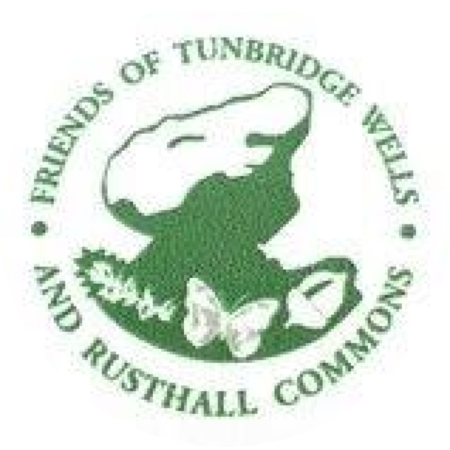
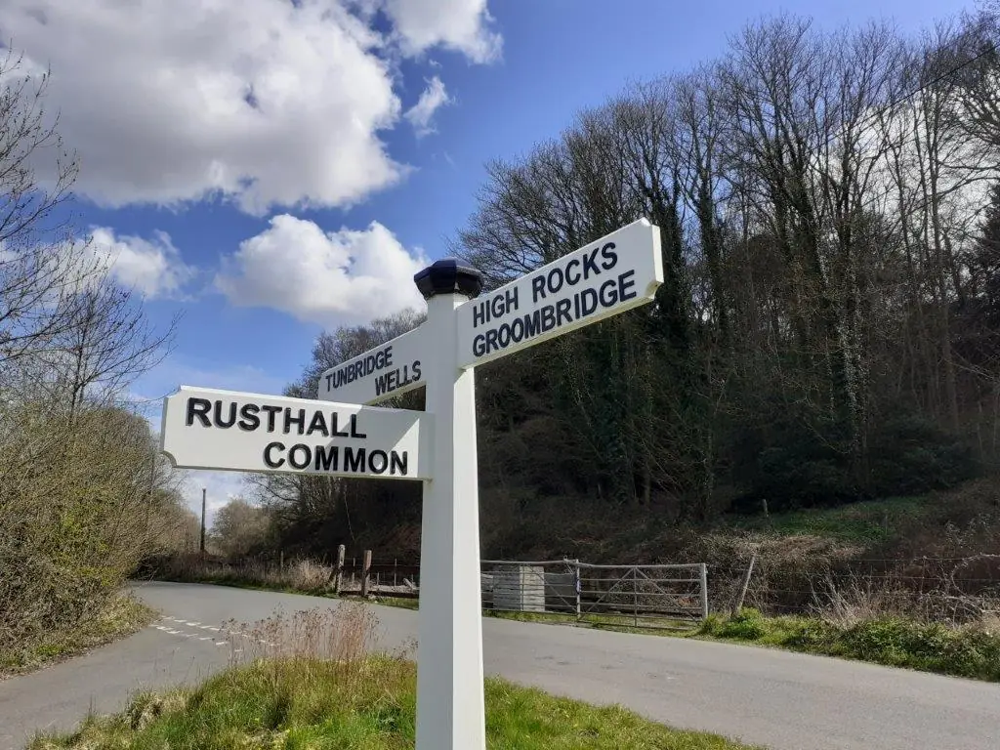

The Friends of Tunbridge Wells & Rusthall Commons
Standing for our ancient public lands and free access in perpetuity
📢 Community Ownership Campaign
Protect Our Commons For The Next 500 Years
Join thousands of local residents backing the community buyout of our 256 acres of ancient woodland, rocks, and heathland.

🌲 256 Acres of Ancient Living Heritage
Wellington Rocks • Toad Rock • Happy Valley • Bull's Hollow
🪨 Irreplaceable Nature
Ancient oak woods, 130-million-year-old sandstone crags, rare heathland glades, and historic cricket greens cherished for generations.
🛡️ Permanent Protection
Community ownership takes our Commons off the commercial market forever, eliminating speculation and safeguarding ecological care.
🚶 Free Public Access
Guaranteed open on foot for walkers, dogs, and families in perpetuity under the Commons Act 2006 and statutory Conservators.
Scan with Phone Camera
How You Can Help Today:
-
1.
Display this poster in your window to show our community stands united.
-
2.
Make a confidential pledge online (accessible tiers from £20) — no funds are collected now.
-
3.
Tell your neighbours & local groups to make their voices heard.
🌐 Visit Online:
friendsofthecommons.uk/campaign
✏️ Verify Officer Contact
Prefer paper or have questions? Speak with campaign lead John Barber at johnspbarber@gmail.com or write to: The Friends of the Commons, Freehold Initiative, Tunbridge Wells, Kent. Every voice counts.